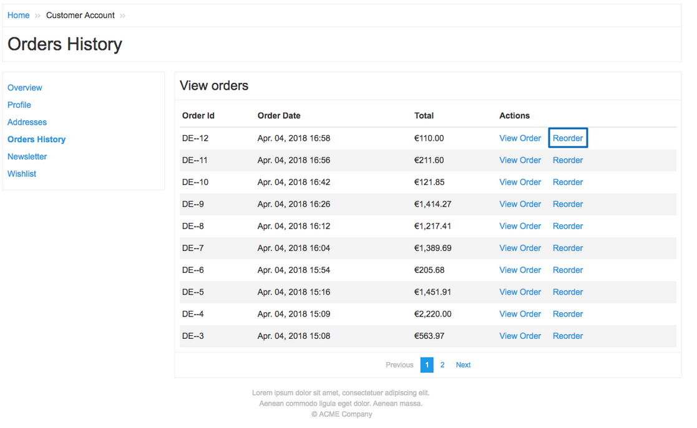
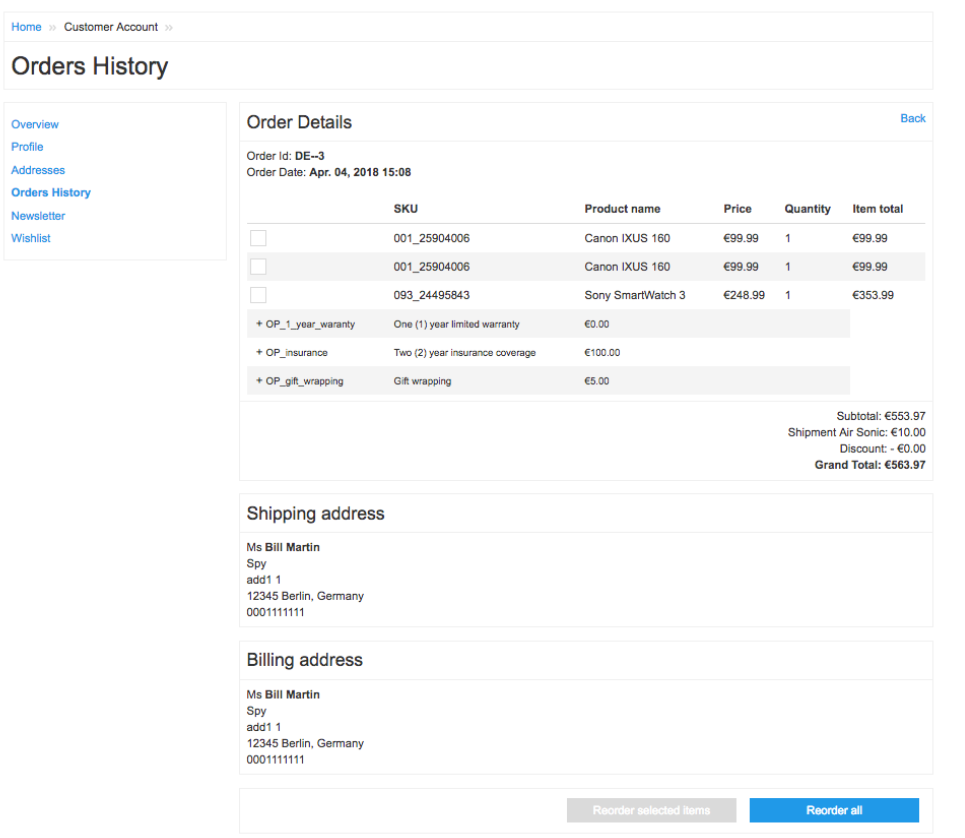
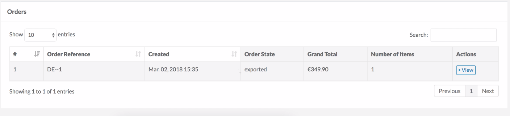

Release Notes - April - 2018
- Release Notes - April - 2018
Features
Reorder
One of the biggest factors that influences customer loyalty and persuades them to repeatedly buy from your shop, is shopping convenience. In this release we are introducing one more feature that will make your customers' (and your) life easier: reorder. This feature allows customers to reorder their previous orders in just one click. All your customers would need to do is go to the Order History in their Customer Account and reorder either the entire order, or individual items from it.


Affected Modules
| Major | Minor | Patch |
|---|---|---|
| n/a | - Cart 4.6.0 - ProductBundle 4.4.0 - ZedRequest 3.4.0 |
- AvailabilityCartConnector 4.1.1 - Customer 7.7.1 - ProductOption 6.1.5 - Sales 8.9.1 - Shipment 6.4.1 |
Own Orders of Customers in the Administration Interface
At one point or another, a shop owner / administrator might want to get a list of all orders made by a specific customer. This information could be useful for various reasons: just to determine if a customer ever ordered from the shop, or to offer them a discount, or to run an order-driven or product-based promotional campaign. From now on, such feature is available: we have added a new Orders section on the Customer View page which lists all the orders made by the customer, as well as general order information, such as creation date, order status, order value and number of items in the order. The detailed order information can be viewed from here as well.

Affected Modules
| Major | Minor | Patch |
|---|---|---|
| n/a | - Customer 7.6.0 - Sales 8.7.0 |
n/a |
Documentation
For module documentation see: Customer Module Overview
For store administration guides see: Customer
Improvements
Checkout Shipment Pre-Check Plugin
There can be a situation when customer places an order, selects a shipment method, and at the same time this shipment method gets deactivated by the shop administrator in the Administration Interface. To avoid placement of order with the shipment method that is no longer active, we have implemented an active shipment pre-check plugin. The plugin checks if the shipment method selected in the current order is active or not. If the shipment method is inactive, the customer will get an error message.
Affected Modules
| Major | Minor | Patch |
|---|---|---|
| - ShipmentCheckoutConnector 1.0.0 | - Shipment 6.4.0 | n/a |
Documentation
For plugin documentation see: Shipment Module Overview
Migration Guides
To upgrade, follow the steps described below:
- Apply every minor and patch:
composer update "spryker/*"- Once that is done, upgrade to the new module major and its dependencies:
composer require spryker/shipment-checkout-connector:"^1.0.0" --update-with-dependenciesCountry on the Order Details Page in the Administrator Interface
With this release we have added Country to Addresses section on View Order page in the Administrator interface, so now the shop administrators can view the country for both the shipping and billing addresses of an order.
Affected Modules
| Major | Minor | Patch |
|---|---|---|
| n/a | - Sales 8.8.0 | n/a |
Extension Points for Post (De)activation of CMS Pages and Categories Update
With this release, we have implemented a post activate / deactivate hook for CMS pages. It also has a connector between CMS and Navigation and another one between Category and Navigation. This means that now a navigation node that represents a CMS page or a Category has an active / inactive status. Thus, for example, if a navigation node is deactivated in the Administration Interface, the categories will be updated, and the deactivated node will not be displayed in the web shop.
Affected Modules
| Major | Minor | Patch |
|---|---|---|
| - CategoryNavigationConnector 1.0.0 - CmsNavigationConnector 1.0.0 |
- Category 4.4.0 - Cms 6.5.0 - Navigation 2.3.0 |
n/a |
Documentation
For plugin documentation see:
Migration Guides
To upgrade, follow the steps described below:
- Apply every minor and patch:
composer update "spryker/*"- Once that is done, upgrade to the new module major and its dependencies:
composer require spryker/category-navigation-connector:"^1.0.0" spryker/cms-navigation-connector:"^1.0.0" --update-with-dependenciesBugfixes
Guest User Order Count
Previously we had an issue with orders count for guest users: All orders of the customer field on the View Order page in the Administration Interface showed count of orders for all guest users in the system. This has been fixed in this release: now the orders of guest users are not counted.
Affected Modules
| Major | Minor | Patch |
|---|---|---|
| n/a | n/a | - Sales 8.8.1 |
SKU Fixes
In this release we have fixed the following issues with SKU generation:
- it is now possible to create SKUs like FOO.BAR-BAZ_QUX;
- editing a product no longer causes generation of a new SKU;
- fixed the error message displayed when using unacceptable characters in an SKU.
Affected Modules
| Major | Minor | Patch |
|---|---|---|
| n/a | n/a | - Product 6.0.1 - ProductManagement 0.13.2 |
Documentation Updates
The following content has been added to the Academy:
- CMS Extension Points
- Customers
- Entity Manager
- Repository
- Payment Integration - Computop
- Computop API
- Computop - Credit Card
- Computop - Direct Debit
- Computop - Easy Credit
- Computop - iDeal
- Computop - OMS
- Computop - Paydirekt
- Computop - PayPal
- Computop - Sofort
Your feedback would be highly appreciated. Please help us understand what you need from the Spryker Academy by filling out a very short survey here.